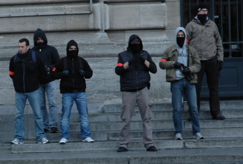

Communiqué de presse
A l'attention de tous.
Ce Vendredi 14 octobre 2011, le tribunal de Grande Instance de Paris a décidé de répondre à la demande du gouvernement en proclamant l'interdiction du site Copwatchnord-idf.org. La police s'est senti victimisée ; et l'état tremblotant a suivi comme toujours la droite lignée donnée par ses fervents représentants sur le terrain et leurs syndicats. Cela a toujours été le cas historiquement, tant en terme de mesures sécuritaires contre une frange de la population ou lors de critiques ouvertes à l'encontre des forces de l'ordre. Cela ne nous étonne pas.
Il est dit que nous réalisons un "fichage" des forces de l'ordre, il nous a été posé la question de la reproduction des méthodes du gouvernement, des méthodes policières, et des allusions au fichier EDVIGE nous ont été faite. Si tant de rapprochement sont fait, c'est bien que ces méthodes posent questions quand à leur utilisation et finalité. Pour autant, nous affirmons de nouveau avoir établi des bases de données regroupant des informations sur membres des forces de l'ordre, qui de part leur statut représentent l'état et la "république démocratique", et sont donc des personnes publiques de part leur choix professionnel. Ces bases de données sont des outils au service des individus amenés à rencontrer ces personnes publiques ; outils leur permettant de savoir à quoi s'en tenir.
Contrairement au gouvernement, nous n'avons que faire de leur vie privée sauf lorsqu'il s'agit de liens avec les différentes composantes de l’extrême droite. Des liens bien souvent gênants pour le gouvernement et les membres des forces de l'ordre concernés directement ou indirectement. Des liens qui font de ces "représentants de l'état" des éléments dangereux à l'encontre de la population, comme cela a pu se voir à différentes reprises. Les dépots de plaintes liés à ces histoires n'ont étrangement jamais abouti à de telle réaction du gouvernement, ou des précédents.
De part ces bases de données, des membres des forces de l'ordre se seraient sentis "en danger", ainsi que leur famille, nous accusant de détruire des vies et d'inciter aux représailles. Paradoxalement, tous les jours, ce sont ces mêmes membres et leurs collègues qui participent à la destruction de nombreuses vies de personnes et de familles, notamment par une utilisation bien souvent zèlée des pouvoirs qui leur sont attribués. Nous avons entendu parler d'une "haine anti-flic" présente parmi la population, et que nous attisions paraît-il. Mais nous ne l'avons pas créée ; c'est les forces de l'ordre elle même, l'impunité dont elles profitent, et bien évidemment les décisions des villes, préfectures, ministères et autres instances gouvernementales de répression qui ont amené l'émergence et le développement progressif de ce sentiment. Nous ne l'exacerbons pas, nous l'avons peut être juste remis sur la scène publique et médiatique. Cela n'a visiblement pas amené le gouvernement à se poser des questions.
En outre, ce sentiment dit "anti-flic" que nous considérons davantage comme un ras le bol des abus quotidiens perpétrés et impunis, s'est traduit par de nombreux messages de soutien, mais aussi des témoignages qui nous ont été transmis. Les messages de soutien et témoignages seront prochainement diffusés sur le site dont le musellement reste à prouver et des témoignages prendront probablement d'autres chemins ; nous avons plus d'une carte dans nos mains.
Quoi qu'il en soit, malgré la censure désirée à l'encontre du site, il reste toujours accessible par des outils tel que Tor ou I2P, que nous conseillons à toutes et tous pour consulter le site et naviguer sur internet. Nous continuerons notre travail et notre lutte pour dévoiler ce que le gouvernement veut cacher par peur de dévoiler son vrai visage sécuritaire et fasciste. Nous sommes déterminés et ne lacherons rien.
Nous les identifierons un à un,
Leur impunité prendra fin.
Catégorie:
Amiens
Retour sur le procès de 3 policiers néo-nazis
de la BAC d'Amiens.
En Février 2008, dans le bar « My goodness » à Amiens, 5 personnes tendaient le bras droit aux cris de sieg heil devant un public bon enfant. Parmi ces 5 personnes, 3 policiers de la BAC d'Amiens se réclamant du White Power.
Ces policiers, suspendus depuis 3 ans, passaient en procès les 22 et 23 mars dernier au Tribunal de Grande Instance d'Amiens ou des amis voyageurs étaient présents. Tous 3 étaient membres de la BAC. Le verdict est tombé le 3 Mai 2011. Les photos étant interdites au sein de tribunaux, nous sommes remontés par les réseaux sociaux.
Le premier policier, Aurélien Cloët a été jugé pour les fait suivants:
-Menaces et actes d'intimidation visant à empêcher des personnes de témoigner
-Provocations à la discrimination et à la haine raciale
Le 3 Mai, il a été acquitté.
Malgré ces chefs d'inculpation, on découvre quand même qu'Aurélien continue à pavaner sur les réseaux sociaux.
L'amitié n'a visiblement pas de prix et la solidarité compte dans la police. Aurélien est toujours très lié à son ex-collègue du My Goodness, Stéphane Nolland.
Stéphane Nolland, second policier adepte du white power a été jugé pour les faits suivants:
-Menaces et actes d'intimidation visant à empêcher des personnes de témoigner
-Provocations à la discrimination et à la haine raciale
Stéphane regrette son métier, Il avait vraiment l'air de s'y plaire...
Stéphane et ses collègues mettaient ce genre de comportement sur le motif de l'alcool. Visiblement ça ne les a pas calmé.
Stephane Nolland a été acquitté.
Enfin le plus gros poisson, Fabrice Lengelé, ancien chef de la BAC de jour d'Amiens, connu pour ses participations aux diverses elections avec le FN, était syndiqué au FPIP (syndicat d'extrême droite de la police nationale)
Dans ce procès, Fabrice Lengelé était accusé de:
-Menaces et actes d'intimidation visant à empêcher des personnes de témoigner
-Provocations à la discrimination et à la haine raciale
-Violence.
Pour ces chefs d'inculpation, Fabrice n'a eu qu'une amende de 1000 euros.
Dans une autre affaire, Fabrice Lengelé a été jugé pour:
-Violation du secret professionnel
-Vol aggravé
Dans ce procès du nazisme ordinaire, les parties civiles et la justice ont fait appel du jugement rendu. Il est en effet hallucinant de voir que pour des faits aussi grave, de plus commis par des flics hors service usant de leur fonction, l'équivalent de 2 bouts de papier de 500 euros soit demandé comme sentence. Par comparaison, un outrage entraîne du sursis.
Catégorie:
Lille: manifestation antifasciste-8 octobre 2011
Cagoule, doigts d'honneur, provocations,
l'exemplarité de la BAC.
Samedi 8 octobre 2011, une manifestation unitaire antifasciste s'est déroulée à Lille. Alors que 2500 personnes étaient présentes, de multiples provocations et incitations à l'émeute eurent lieu tout au long du cortège. La BAC de Lille et la BAC du Nord en sont les premières responsables. Certains d’entre eux, bien connus, voulaient clairement en découdre avec le cortège antifasciste, tout cela sous les yeux du DDSP du Nord Jean Claude Menault.
Nous tenons également à dénoncer l'article de Nord éclair de ce dimanche qui n'hésite pas à parler de provocations de la part de certains manifestants provoquant les forces de l'ordre en fin de manifestation. Nord Eclair annonce également des interpellations alors qu'il n'y en a eu aucune.
http://www.nordeclair.fr/Actualite/2011/10/09/contre-manifestation-anitifasciste-cnt-ldh-sud.shtml
Voici donc par l'image, le comportement des flics en civils lors de la manifestation
Les insultes ont commencé dès le départ place du marché de Wazemmes avec une série de doigts d'honneur à l'attention de la foule.
Officiers de la BAC avec une crampe au doigt
Tout au long du cortège, les services d'ordres ont eu affaire à des tentatives d'infiltration de groupes de BAC littéralement cagoulés et sans brassards.
En fin de cortège, sur les marches du palais des beaux-arts, certains officiers de la BAC se sont crus dans les tribunes du LOSC et chantaient « police-police », face aux antifascistes, à la manière des supporters de foot, les 2 bras levés. On a également retrouvé toute la flicaille en civil qui a voulu s'introduire dans le cortège.
Policier de la BAC se sentant au stade provocant la foule

Flic du départ de la manif en fin de cortège avec flashball , gazeuses et cagoules.
Ces scènes peuvent paraître saisissantes pour les novices de manifestations mais habituelles pour les piliers. C'est juste qu'elles ne sont jamais dénoncées et jamais publiées, mais ça se passe toujours comme cela, et ça s'empire.
La flicaile aujourd'hui se résume à ce portrait ci-dessous.
Catégorie:
Paris-Barbès.
Vigilance envers les flics en civils à Barbès
Ce Mercredi 5 Octobre, des flics en civils ont été suivis et flashés lors d'un énième contrôle au faciès. Ces policiers traînent régulièrement dans le quartier au nombre de 4 ou 5. Leur lieu d'affectation est le commissariat de la Goutte d'Or d’où ils font régulièrement des aller-retour. Ils appartiennent sans doute à la BAC ou au GSP. Facilement reconnaissable, ils ciblent d'abord le faciès puis le comportement de la future proie. Ils n'hésitent pas à procéder à des fouilles sans brassards particulièrement approfondies. Ils sont régulièrement habillés de la même manière et l'age varie de 30 à 40 ans. Nous recommandons la plus grande vigilance vis à vis des ces flics.

Contrôle au faciès sans brassards. Photo prise le 5 Octobre 2011.
Catégorie:
Lille
Un policier lillois fan du groupe néo-nazi opstaan.
Nous n'avons rien dit, et vous n'avez rien vu, mais un travail intensif a été effectué sur toute votre organisation externe et interne. De nombreuses erreurs ont été commises par vos hommes et nous avons parfaitement su les gérer. Les failles de votre système ont été une opportunité pour nous et nous continuons à nous en servir. Fermeté sera le maître mot face à vos comportements.
Clichés photographiques extraits des observations depuis les toits des maisons face au central de Lille.
Prise de service de 3 camions de Compagnie départementale d'intervention.Toute les heures de relève ont été repertoriées;
Maintenant et après plusieurs années de travail, nous somme arrivés à maturité et tout ce que nous savons sur vous, nous le transmettons et allons le transmettre à tous et à toutes. Nous mettrons tous les moyens en notre possession pour former les militants et militantes syndicaux, les sans papiers, les populations des quartiers les plus atteints par la répression a ne plus avoir peur de votre police.
Nous commençons nos diffusions par un classique, une tradition maintenant à Lille....c'est juste un de plus

Pierre Van Grevelinghe,
http://www.facebook.com/profile.php?id=100001355526978

Depuis un certain temps, le fonctionnaire de police Pierre Vangrevelinghe en fonction au commissariat central de Lille a fait l'objet d'une surveillance accrue de son compte facebook. Ce policier a été grillé sur le groupuscule néo nazi lillois opstaan. Pour rappel opstaan est la succursale de la maison flamande et en lien direct avec d'autres groupuscules nazis nationaux comme la troisième voie de Serge Ayoub ou le bunker kops de Lyon. Opstaan a organise également des concerts néo nazis dans la métropole lilloise avec des groupes comme brigade M ou match retour. Ce 8 Octobre, c'est également opstaan qui organise la grande marche néo nazi contre l'islamisation et la fête du cochon qui s'en suit.
Pierre est donc un policier qui n'aime pas vraiment les musulmans, bref les gens pas français de souche. Différentes captures que voici montrent qu'il n'a pas choisi au hasard opstaan et qu'opstaan n'est pas venu sur son compte par hasard
Dans un premier temps,Pierre publie sur son mur des vidéos d'un goût sulfureux clairement raciste, « Islam en France (filmé dans un bus)/Cela se passe en France au cas ou vous en douteriez »

Puis Pierre laisse des votes d'appréciation positifs sur des autocollants d'opstaan dont voici l'extrait « Encore une soumission à l'islamisme … Non a la Charia dans le code civil »

Ci-dessous, Pierre et les punks

Pierre, spécialiste des fichiers de police CANONGE et GASPARD nous parle aussi de sa vie au central, des plaintes qu'il prend le dimanche.

Nul doute que la Direction Generale de la Police Nationale si prompte à protéger ses hommes saura une fois de plus protéger les plus racistes d'entres eux. Les prochaines diffusions seront bien plus accablantes pour cet ordre repressif. Nous constatons juste qu'après 2 circulaires concernant la retenu des flics de par leur fonction est une mascarade totale. Il n'y a personne pour les contrôler.
Bienvenue à Lille, Pierre.
Catégorie:
Communiqué
A nous de parler...
Nous souhaitons tout d'abord remercier les centaines de personnes nous ayant envoyé leur soutien, approuver notre démarche et qui vivent au quotidien le flicage et la répression dans leur villes et villages. Nous constatons également que l'idée du copwatching risque de s'installer dans d'autres métropole que Calais, Lille et Paris. Oui, nous devons faire trembler la police nationale et l'état qu'elle protège.
Nous tenons également à apporter notre soutien à toutes les personnes qui ont été interrogées et violentées par la police judiciaire de Lyon et son Numéro 2, Michel Neyret. Parmi ces personnes,nombreuses sont celles qui actuellement se trouvent en taule, placées par ces ripoux, corrompus et mafieux et qui ont perdu emplois, proches et familles. Police et corruption vont de pair
Enfin, nous souhaitons conseiller Denis Jacob et Dieu, alias Jean Claude Delage du syndicat Alliance police nationale. On a écouté chacune de vos interventions. Pour calmer vos ardeurs, nous vous recommandons la ritaline. C'est comme le copwatch, ça vient d'Amérique, ça fait le même effet et ça s'est developpée dans les années 90. La première fois que tu la découvres, ça fait tout drôle, mais après ça passe tout seul, on s'y adapte et on fait avec.
Ces derniers jours,nous avons vu l'emballement médiatique et la proportion que ce site a apporté depuis sa sortie. Comme nous l'avions dit précédemment, le copwatch est sans doute la technique la plus dure mais la plus efficace pour assurer l'anticipation et la dénonciation des violences exercées par les forces de sécurité. Actuellement la police française et bien plus violente que les polices anglo-saxonnes. Nous rappelons au passage le rapport édifiant de la CNDS et Amnesty international, ou cette même police fut accusée de bafouer les droits de l'homme. Nous ne pouvons et n’arrêterons jamais notre travail d'investigation, de contre renseignement et de diffusion. Soyez-en sur.
Maintenant, et vu que le calme est revenu, nous allons répondre aux flics, aux syndicats de flics, et à Claude Guéant.
- La diffamation
Nous avons été accusés de diffamer et porter atteinte à l’honneur de la police nationale. Nous diffusons donc 2 premières vidéos tourné à Calais et montrant la tristement célèbre PAF de COQUELLES dans ses œuvres. Entre menaces de mort, disparition totale de la déontologie et insultes sexistes, c'est bien pire que de la diffamation.
En Avril 2010, les vidéos de le honte été diffusées sur les inrocks et rue 89, montrant l'attitude de la PAF de Coquelles. Une enquête est d'ailleurs en cours
http://www.rue89.com/2011/04/10/harcelement-policier-a-calais-les-videos-qui-font-honte-199295
Nous montrerons également les agissement de la BST de Belleville du Brigadier Major Roland Toineau et particulièrement la vidéo d'un biffin gazé et laisser à l'abandon inconscient sur un trottoir.
- Les bases de données
Nous avons été accusés de divulguer adresses et données personnelles. Ou sont t'elles?
Nous avons été accusés de prendre les flics en photos à leur insu. Voici les photos à l'état brut. Il suffit d'observer le regard et la distance de capture. Ils sont parfaitement au courant d'être ciblés.

Depuis de nombreuses années, des publications sont produites sur les sites de médias indépendants indymédia. Nous les avons mis en lien sur notre site. Jamais vous n'avez réagt à ces publications. Nous avions promis que nous frapperions fort, nous l'avons fait mais sachez que tout commence, rien n'est fini. Nous n’arrêterons jamais nos traques.
PS : Pour finir, nous vous présentons ce que les 75 groupes de copwatch des USA ont créé ces 20 dernières années : Une base de donnée nationale regroupant des informations de 212000 officiers de police américains. La CIA et le FBI n'ont jamais réussi à la supprimer.
Ca calme.
Catégorie:
Couronnes/ Ménilmontant, Paris 11°/20° : Vendredi 30 Septembre 2011
Repression du Marché Libre
Couronnes/ Ménilmontant, Paris 11°/20°, Vendredi 30/09/2011,les flics chassent comme d’hab le Marché libre depuis 16H00. Le Marché se disperse et se reforme plusieurs fois sous l’action de keufs.
18H45, hauteur du 11 Bld de Belleville, un flic dans un groupe de six, s’adresse à plusieurs dizaines de marchands ambulants aux affaires rangées et aux promeneurs/acheteurs, qui attendent tous sur le terre-plein central ( le trottoir ) que les flics s’éloignent pour reprendre le Marché : "... Rentrez chez vous !!... vous avez pas quelquepart où habiter ??... Putain !!... un boulevard qu’est occupé comme ça, c’est pas normal !! "
18H55, hauteur du 15 Boulevard de Belleville ; le Marché libre s’est reformé. Des flics à vélos reviennent le disperser ; l’un des flics à vélo arrive à hauteur d’une grand-mère chinoise qui vient vendre ses affaires avec son mari et son petit-fils de 20 mois dans sa poussette. Un flic à vélo, en roulant : "... C’est pas lamentable d’utiliser des enfants pour faire ça !!... espèce de connasse va !! "
Un peu plus tard, les keufs passeront de nombreuses fois dans leur voiture sur le terre-plein central (le trottoir central) où tout le monde tente de vendre et d’acheter et se promène, pour disperser la foule. Vers 19H00, le Marché libre se remettra à vivre pleinement, avec des centaines d’acheteurs, de vendeurs et de promeneurs.
Catégorie:
Insécurité routière et alcoolisme
La Gendarmerie s'amuse dans les casernes
La gendarmerie nationale, ordre militaire dans l'âme, organe d'état qui moralise les gens en cas d'infraction routière, d'alcoolisme..... C'est ce même organe qui gaza des personnes âgées lors d'un blocage de voie de chemin de fer à Anduze sans sommation. Le gazeur Frederic Warion se reconnaitra.
La gendarmerie est certes une petite muette, mais une grande romancière à l'image de sa sœur police nationale. Cet été, sur les autoroutes françaises, on en a bouffé du gendarme. Pas une journée sans que l'on entende parler de la nouvelle renault megane 260 kmh achetée pour intercepter les « assassins de la route ». Pas une journée sans entendre le ton paternaliste du bon gendarme ventant le bienfait de ses nouveaux radars lasers d'une portée de 1500 mètres.
Et pour nous, pas une seule journée ne nous a empêché de lire et voir vos conneries démontrant le niveau que vous reflétez. Les photos suivantes ont été capturées sur les réseaux sociaux, lieux ou certains gendarmes discutent beaucoup et publient beaucoup. Comme pour les CRS, l'alcool coule à flot dans les casernes. (le floutage existait à l'origine). Attention, le syndrome de korsakoff n'est plus très loin.
Catégorie:
CHASSE AUX PAUVRES-BARBES: Mercredi 28 Septembre 2011
Les chiens s'ennuyaient
9h45 – Le fourgon des flics chasseurs (immatriculé 831 NWR 75) est stationné à la sortie du métro Château Rouge. Il est en stand-by, un flic en uniforme se tourne les pouces derrière le pare-brise.
10h00 – Du côté de Barbès, le marché est déjà bien actif. Deux flics en civil du comico de la Goutte d’Or se tentent une incursion en solo. D’abord ils marchent d’un pas détendu, sans intervenir sur le marché libre, semblant attendre le signal. L’un des deux est pendu à son portable...
10h15 – L’un des deux chasseurs se retourne subitement, comme s’il avait enfin reçu le signal tant attendu, et bondit littéralement sur un rrom qui vend le long des grilles du métro. Le pauvre n’a pas le temps de réaliser ce qui lui arrive qu’il est plaqué contre le pilier du métro aérien. Ses sacs lui sont saisis, puis les deux flics le congédient et restent autour de leur saisie, toujours suspendus au téléphone, regardant au loin dans la rue des Islettes si les collègues se pointent. Entre temps, le marché s’est dispersé. Finalement, les flics repartent avec chacun un sac à la main en direction du commissariat de la Goutte d’Or.
11h00 – Quatre flics en civils piétinent à l’entrée des parkings Vinci, juste sur le trottoir en face du marché libre. Les vendeurs ne semblent pas les avoir remarqué, alors on les prévient. Pas de réactions de panique, mais des regards anxieux dans leur direction. Certains préfèrent plier leurs affaires, au cas où. Mais les flics restent là bien quinze minutes, sans rien faire.
11h20 – Les quatre flics traversent la rue en courant, fondent à travers le marché libre pour rejoindre la rue Guy Patin, renversant au passage les étals des vendeurs de menthe qui sont sur la chaussée. De la verdure est saisie (on pourrait croire qu’il existe une filière clandestine de menthe et de coriandre). Mouvement de panique, une partie des vendeurs s’esquive, tandis que les autres s’agglutinent pour voir ce qu’il se passe. Au carrefour du boulevard de la Chapelle et de la rue Guy Patin sont stationnées deux voitures de police, qui bloquent en partie la circulation, accompagnées de la voiture banalisée de l’unité cynophile (immatriculée 331 QXQ 75). Devant, sept flics en uniforme se sont rassemblés et semblent élaborer un plan d’action, qui avec son gilet tactique, qui avec son talkie-walkie. Mêlés à la meute, les quatre flics en civil ont été rejoint par deux autres, ce qui nous amène à treize flics sur deux mètres carrés. Mais que veulent-ils faire ?
11h30 – L’assaut est lancé : la brigade canine a sorti les chiens et fonce au milieu des vendeurs à la sauvette, déjà bien clairsemés. Mais leur but ne semble pas d’arrêter les vendeurs. Ils passent au milieu d’eux à la recherche de quelqu’un, leur chiens bondissant en aboyant sur les pauvres gens qui se tiennent trop près. « Casse-toi jt’ai dit ! » crie l’un des deux flics cynophile à l’adresse d’un vieil homme. On a compté : quatre personnes, dont trois vieillards, se sont fait agresser par les chiens, qui leur ont bondi à la figure en se dressant sur leurs pattes arrières. Pendant ce temps, trois flics en civil prennent en chasse un grand mec avec des cheveux longs, avant de s’apercevoir qu’ils se trompent de cible. Au final, un jeune maghrébin est interpellé et menotté au même endroit que le garçon rrom de tout à l’heure, avant d’être embarqué à pieds en direction du commissariat de la Goutte d’Or (rue des Islettes).
Le raid canin aura aussi permis d’enrichir les trophées de chasse : le fourgon blanc de la rue Clignancourt vient d’arriver et les flics en civil se chargent d’y jeter les caddies et cagettes attrapées au vol. Dans le fourgon, on peut apercevoir les cagettes de menthe de tout à l’heure.
Du côté de la rue Guy Patin, on apprendra que la justification de ce raid est le cambriolage d’une grosse voiture bourgeoise aux vitres teintées qui a eu le malheur de se garer dans le coin. La vitre avant droite a été fracturée et le chéquier de la dame, ainsi que d’autres affaires, ont été volés.
Ça apprendra à la dame qu’il ne fallait pas acheter une grosse bagnole clinquante qui dit « mon proprio a du pognon ». En tout cas, Robin des bois aurait apprécié le geste.
Un veilleur des marchés libres
Nous recommandons la plus grande vigilance vis-à-vis de ces 2 policiers. Ils trainent au sein du métro Barbes et n'hésite pas à harceler les marchands.
P.S. : Des images de ces interventions de police sont également prises, mais on a choisi d’adopter une stratégie de compilation des données, préférant à la « publication à scandale » la rédaction de chroniques régulières et informationnelles. Quand viendra le moment de faire quelque chose des images, on prendra le temps de la réflexion, pour évaluer le meilleur moyen d’en faire usage. Mais ces images seront là pour prouver que nos chroniques ne sont pas que pure invention : la réalité est réellement aussi laide qu’on la décrit.
Catégorie:
MENILMONTANT, COURONNES: Mercredi 28 septembre 2011
Chasse aux roms, aux tunisiens et aux pauvres.
Mercredi 28 septembre 2011, 17H40, deux flics à vélo qui chassaient les vendeurs du Marché libre, foncent sur un groupe de deux Tunisiens, à hauteur du 9 Boulevard de Belleville, sur le terre-plein central. L’un s’empare d’un sac ; le second, très vite : " t’as des papiers ? "... " t’as pas de papiers ? "...une minute à peine et trois autres flics à vélo arrivent et aussi deux autres qui sortent d’une voiture. La question sera répétée en boucles : " t’as pas de papiers ? ". Le Tunisien est menotté et embarqué dans la voiture. Les cyclistes se dispersent ; l’un porte le sac à dos bleu du Tunisien sur son dos.
Depuis 16H00, déjà, ils chassaient tous les marchands du marché libre, entre Couronnes et Ménilmontant. Depuis peu, les marchands ambulants essaient, en effet, de vendre à Ménilmontant, espérant la tranquillité ( quelques centaines des personnes, acheteurs et vendeurs hier vers 17H00). Les groupes de flics surgissent de partout, à pieds, à vélos, en voitures, en camion, etc ; vêtus de bleu, de noir,etc...
Ce mercredi vers 16H00, deux flics à vélo surveillent les vendeurs qui patientent, Métro Ménilmontant, devant la bouche de métro. Les Roms sortent de la station, s’éparpillent avec leurs baluchons. Une femme Rom et son enfant, portant des baluchons, veulent sortir, eux aussi, vers la vie enfin, vers un morceau de pain pour le soir. Les flics les repoussent, du regard et de la voix, vers l’intérieur de la station : "Allez ! Allez !". Les deux Roms redescendent les escaliers. En fait, retrouvant d’anciens instincts, ils vont se tapir à l’intérieur, et ressortir un peu plus tard, quand les deux cyclistes seront partis ; non sans jeter des regards craintifs autour d’eux.
Hier ce fût pareil. Et le jour d’avant également. Et chaque jour. Et chaque heure.
La répression des vendeurs ambulants, des Roms, des Sans-papiers, Tunisiens ou autres, est sans répit entre ces trois Stations de Métro, dont on ne pourra plus séparer les noms de tout ce qui s’est passé ici depuis 2008 : Belleville, Couronnes, Ménilmontant, de sinistre mémoire.
Dorian